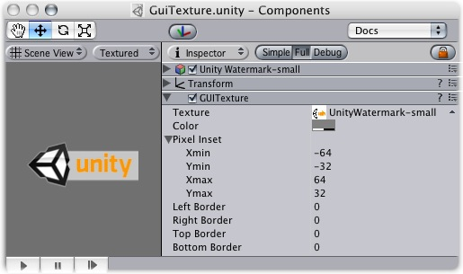

Previous
Previous
GUI Textures are displayed as flat images in 2D. They are made especially for User Interface elements, buttons, or decorations. Their positioning and scaling is performed along the x and y axes only, and they are measured in Screen Coordinates, rather than World Coordinates.

The GUI Texture
Properties
| Property: | Function: |
|---|---|
| Reference to the Texture2D that will be used as the texture's display. | |
| Value that will tint the Texture drawn on screen. | |
| Used for pixel-level control of the scaling and positioning of the GUI Texture. All values are measured relative to the position of the GUI Texture's Transform. | |
| Left-most pixel position of the texture. | |
| Bottom-most pixel position of the texture. | |
| Right-most pixel position of the texture. | |
| Top-most pixel position of the texture. | |
| Number of pixels from the left that are not affected by scale. | |
| Number of pixels from the right that are not affected by scale. | |
| Number of pixels from the top that are not affected by scale. | |
| Number of pixels from the bottom that are not affected by scale. |
Details
To create a gui texture
- Select a texture in the project view
- Choose Game Object -> Create Other -> GUI Texture
GUI Textures are perfect for presenting game interface backgrounds, buttons, or other elements to the player. Through scripting, you can easily provide visual feedback for different "states" of the texture — when the mouse is hovering over the texture, or is actively clicking it for example. Here is the basic breakdown of how the GUI Texture is calculated:

Here's a real-world example of GUI Texture at work from Unity forum member Bampf's game Pawns.

Borders
The number of pixels that will not scale with the texture at each edge of the image. As you rarely know the resolution your game runs in, chances are your GUI will get scaled. Some GUI textures have a border at the edge that is meant to be an exact number of pixels. In order for this to work, set the border sizes to match those from the texture.
Pixel Inset
The purpose of the Pixel Inset is to prevent textures from scaling with screen resolution, and keeping thim in a fixed pixel size. This allows you to render a texture without any scaling. This means that players who run your game in higher resolutions will see your textures in smaller areas of the screen, allowing them to have more screen real-estate for your gameplay graphics.
To use it effectively, you need to set the scale of the GUI Texture's Transform to 0, 0, 0. Now, the Pixel Inset is in full control of the texture's size and you can set the Pixel Inset values to be the exact pixel size of your texture.
Hints
- The depth of each layered GUI Texture is determined by its individual Z Transform position, not the global Z position.
- GUI Textures are great for making menu screens, or pause/escape menu screens.
- You should use Pixel Inset on any GUI Textures that you want to be a specific number of pixels for the width and height.